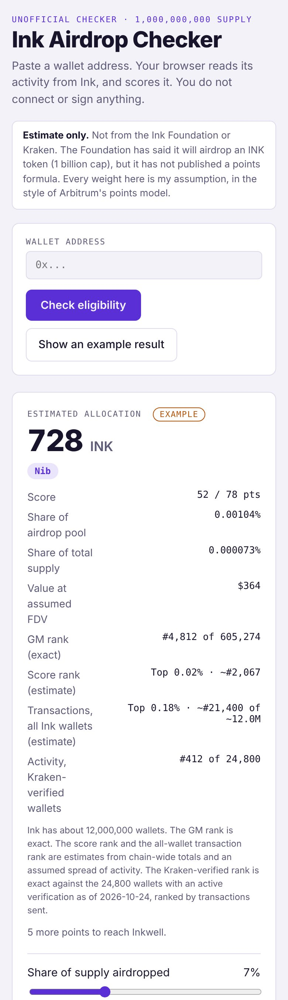

Ink Airdrop Checker
An unofficial airdrop simulator I made for the Ink chain. Paste a wallet address and it reads the wallet's public activity, then shows an estimated score, tier and token amount on a 1,000,000,000 supply.

The example result: score breakdown on the left, estimated allocation and rankings on the right.
The idea
The Ink Foundation has said an INK token airdrop is coming but hasn't published how points are calculated. I built this so people can explore what a points-style score could look like for their own wallet. The page says clearly that every weight is my own assumption.
How it works
- Reads public data only: the Ink RPC and Blockscout explorer for transactions, active months, apps used, holdings and contracts deployed.
- GM leaderboard: reads the gm.ink leaderboard through a serverless function, because that site sends no CORS headers.
- Transparent scoring: a maximum of 78 points across wallet activity, Ink identity, Ink usage and GM, with editable tier tables.
- Anti-farming rules: the score is halved for wallets that look like farming, such as very high transaction counts across very few apps.
- Rankings: an exact GM rank and a verified-wallet rank refreshed daily by a GitHub Action, plus clearly labelled estimates for the rest.
- Adjustable outcome: a slider for the share of supply airdropped, so users can see how the estimate changes.
The design
I kept the interface light and built it around one job: paste an address and read the result. A plain disclaimer sits at the top, each score row shows points earned against the maximum, and on phones the layout stacks into one column.

The example result on mobile
This checker is an unofficial estimate and is not affiliated with the Ink Foundation.